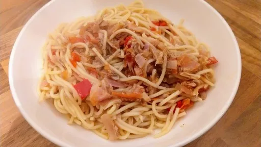

Spaghetti with tomato, chilli & tuna salsa
20 mins
Serves 4

Not just low fat, this satisfying supper for the family can also be thrown together quickly if you are short of time.
Ingredients
- 350 g spaghetti
- 1 small red onion
- 500 g tomatoes
- 2 tbsp olive oil
- 1 red chilli, deseeded and chopped
- 140 g tuna in brine, drained
Instructions
- Cook the
spaghetti350 g
in plenty of boiling, salted water, according to the packet instructions.
- Meanwhile, finely chop the
onion1 small
and tomatoes500 g
, and put them in a large pan along with the oil2 tbsp
. Add the chilli1
to the pan. Gently heat through for a few minutes, stirring well.
- Drain the pasta and add to the sauce, then break up the
tuna140 g
and add to the pan. Season to taste, then toss well and serve in bowls.
-
kcal
404
-
fat
8 g
-
saturates
1 g
-
carbs
70 g
-
sugar
8 g
-
fibre
4 g
-
protein
18 g
-
salt
0.52 g
BBC Good Food: Low-fat Feasts
Short Link
Long Link